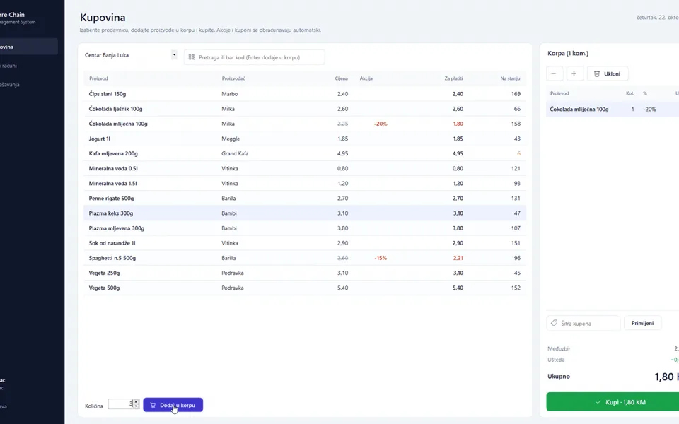
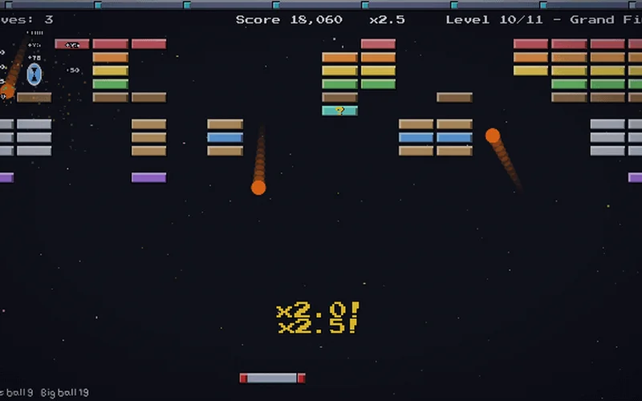
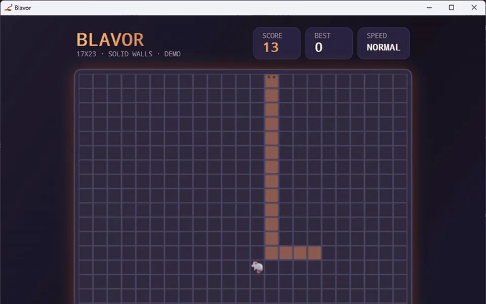
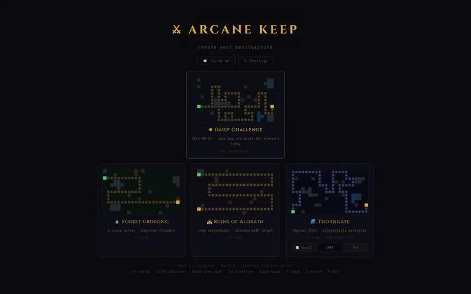
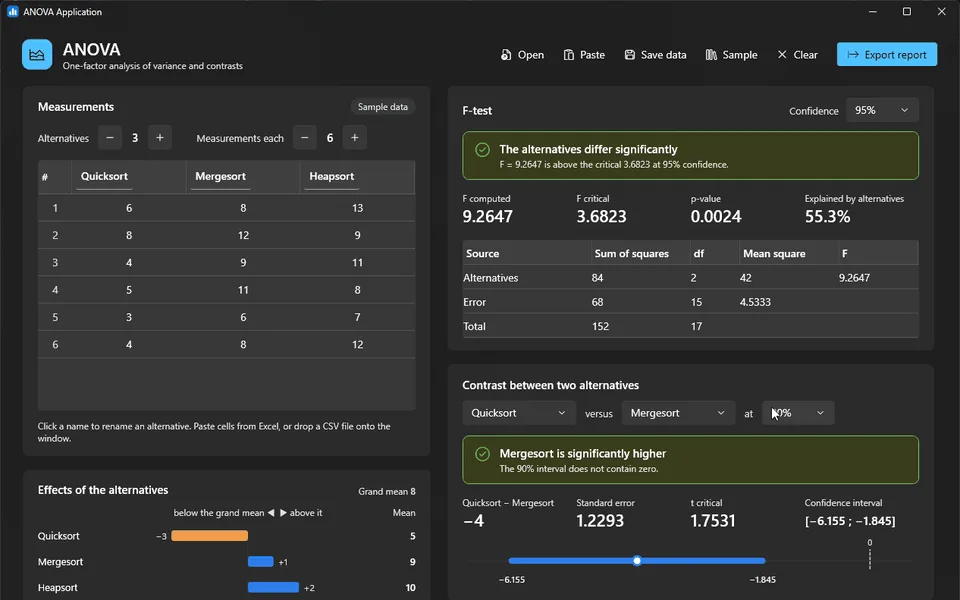
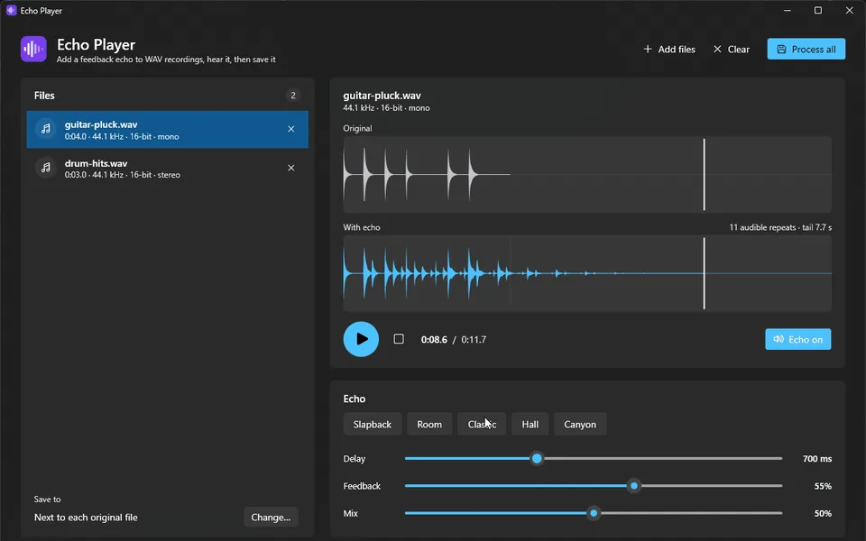
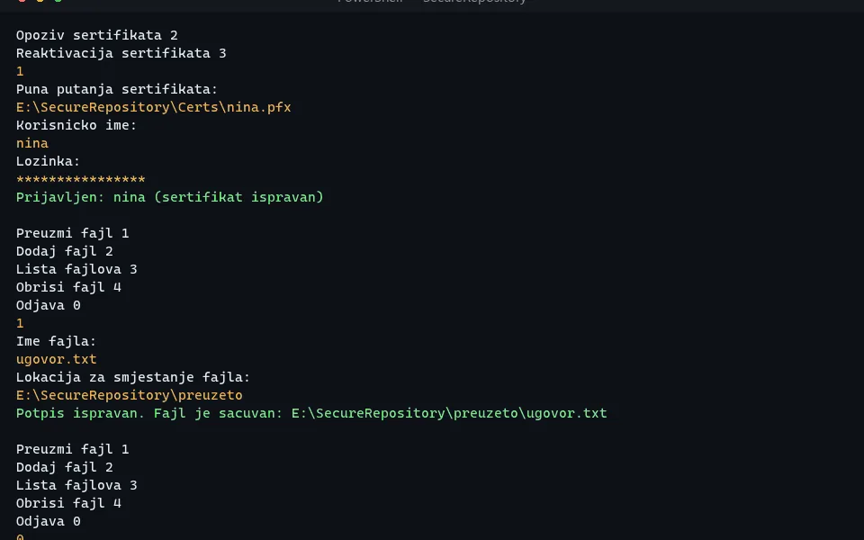
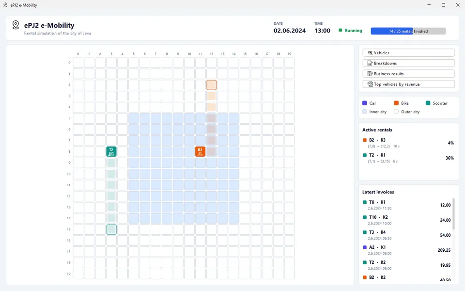
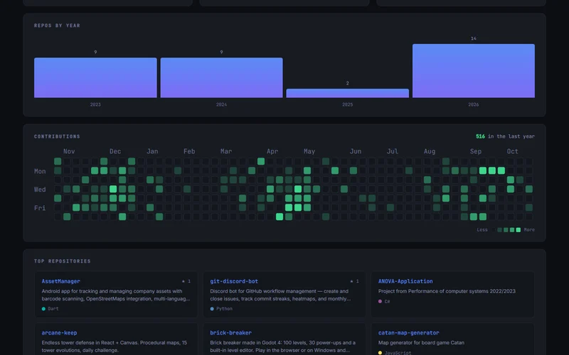

I'm a Software Engineering graduate from Trebinje, now based in Banja Luka, with a focus on backend systems. I build reliable, scalable applications, from microservices to mobile apps.
My work spans distributed systems with RabbitMQ and Docker, real-time platforms, REST APIs and full-stack web applications. I'm comfortable across several ecosystems and like picking the right tool for the job.
I work professionally as a backend developer and I'm open to freelance work on backend, API or full-stack projects.
Languages
,,,,,
Frameworks
,,FastAPI,,,,,,,
Infrastructure
,,,,,,,,GCP,,,,
Select a technology to find it in the projects index.
Pero Grubač, backend developer
Systems
Backends made of several services that talk over queues, sockets and REST. Each one gets a case study.
Incident Alert
Citizens report incidents on a map; moderators approve them first.
Citizens report incidents on a map with photos; nothing reaches the public map until a moderator approves it. Four ASP.NET Core 10 services: a public API, a moderation service with its own database, ML.NET k-means grouping of similar reports, and statistics with hot spots and daily trends. Reports, approvals and categories travel as MassTransit events over RabbitMQ, photos included. Accounts are approved by an admin, and Google ID tokens are verified on the server. 94 backend and 108 frontend tests; CI runs an end-to-end smoke test against the whole Docker stack and publishes the images to GHCR.
Built with ASP.NET, C#, React, RabbitMQ, MassTransit, PostgreSQL, ML.NET, Leaflet, Docker, Microservices, JWT, REST APIs.
Electric vehicle rental platform made of four apps on one database: an Angular back office for admins, operators and managers, a mobile-first JSP shop where clients rent, pay by card and get a PDF invoice, a JSP promotions portal, and the Spring Boot API. Operators see the fleet on an OpenStreetMap map; managers get revenue and fault statistics.
Built with Spring Boot, Java, Angular, TypeScript, JSP, MySQL, Spring Security, Flyway, OpenAPI, Leaflet, Testcontainers, Docker, Nginx, JWT.
Secure internet forum where accounts are approved by an admin and every comment waits for a room moderator. Two-factor sign-in with an emailed code, Google OAuth2, and revocable JWT sessions in an httpOnly cookie. TLS on every hop with certificates from an internal OpenSSL CA; a WAF hit ends the sender's session and a SIEM logs 18 kinds of security events. 219 backend and 86 frontend tests.
Built with Spring Boot, Java, React, Vite, MySQL, Spring Security, JWT, OAuth2, OpenSSL, Flyway, Docker, Nginx.
Distributed library platform of seven Java applications: three Swing clients for the library, members and suppliers, plus a REST API, a discovery server, a supplier server that downloads books from Project Gutenberg, and an RMI accounting server. Each link uses the protocol that fits it: REST, TCP and TLS sockets, UDP multicast, RabbitMQ and RMI. Supplier orders go through durable queues, invoices get 17% VAT over RMI, and nothing is Java-deserialized off the wire. 171 tests.
Built with Java, Redis, Sockets, TLS, UDP Multicast, RMI, RabbitMQ, JAX-RS, Swing, JWT, REST APIs.
Scores each of my public repositories from 0 to 100, every week.
RepoHealth
A health monitor for all of my public repositories. Each one is checked for a README, a license, tests, CI/CD and recent commits, then scored from 0 to 100, every week.
Weekly scan of every public repository, with the time of the last scan shown
Totals at a glance: repositories, average score, passing and needing attention
Search plus passing / warning / critical filters; a card with the score per repo
SvelteKit on Vercel, with a strict Content Security Policy
Built with SvelteKit, JavaScript, GitHub API, Vercel.
Retail chain desktop app; the MySQL database enforces the rules.
Store Chain Management

Store Chain Management: shopping view with products and the cart
Desktop app for running a retail chain — stores, staff, stock, discounts, shopping and reports — built around a MySQL database that enforces the business rules itself.
Django blog with drafts, publishing and moderated comments.
Minimal Blog
Minimal Blog: a post with approved comments and edit controls
A small Django blog: write posts in a rich-text editor, keep them as drafts, publish, and moderate visitors' comments. 90 tests at 99% coverage, run on both SQLite and PostgreSQL.
A draft is a post without a publish date; comments stay hidden until approved
Data-changing actions are POST-only with CSRF tokens; comment text always escaped
Docker Compose with PostgreSQL 16, or SQLite for local development
CI: Ruff, missing-migration check, tests on 2 databases, Docker smoke test
Built with Python, Django, PostgreSQL, Bootstrap, Docker.
Timers to a duration or a date that survive refreshes and sleep.
Countdown
As many timers as you like, to a duration or a date. Remaining time is never stored or decremented: each timer keeps an absolute target and the display is always target − now, so it survives refreshes, sleep and offline periods.
Repaint loop pauses in hidden tabs and recalculates the moment you return
Share links carry the timer in the URL hash — the same moment in every timezone
Recurring timers with month-end clamping: Jan 31 → Feb 28 → Mar 31
Retro arcade game with 100 levels, 30 power-ups and an editor.
Brick Breaker

Retro arcade game in the style of DX-Ball 2 and Arkanoid, with 100 levels, 30 power-ups and a built-in level editor. A bot has played every built-in level to the end to prove it can be cleared.
Hand-rolled ball physics with substeps, so the ball never tunnels through bricks
11 kinds of bricks; levels are plain JSON and level sets can be shared
Everything drawn in code; most music and sound effects generated · English / Serbian
190 GUT tests in 18 scripts · builds for the web, Windows and Android
Built with Godot, GDScript, GUT, WebAssembly, Android, Game.
Classic Snake for Windows with a second player and a demo bot.
Snake (Blavor)

Snake: the snake on a 17×23 grid with score, best and speed
Classic Snake for the Windows desktop with a second player, wrap-around walls, rising speed and remappable keys. In demo mode a bot takes the shortest path to the mouse unless that would trap it.
Rules live in a UI-free core library; WPF only draws, keeps time and handles input
Two snakes move at once: every target cell is worked out before anyone moves
Sound effects synthesised to WAV in memory; maps from 15×15 to 25×25
136 tests, including 5 UI automation tests that drive the real game
Built with C#, .NET, WPF, xUnit, UI Automation, Game.
Endless tower defense on procedurally generated maps.
Arcane Keep

Endless tower defense on procedurally generated maps, with waves that scale until they are genuinely dangerous. The whole simulation runs in tile space on a fixed 1/60 s timestep — no DOM, no React, no pixels — so combat is deterministic and seedable.
5 towers, 15 evolutions — including an Obelisk support tower that buffs everything in range
9 enemy types; Dread Lord bosses every 5th wave, Void Overlords from wave 20
Daily challenge: same map and waves for everyone, seeded from the date
All audio synthesised with Web Audio · 8 Vitest suites, 106 assertions · plays offline
Built with React, JavaScript, Canvas, Web Audio, Vite, Vitest, PWA.
Estimates π with NumPy in the browser, a notebook and the CLI.
Monte Carlo π · Python
One NumPy package that estimates π three ways: in the browser, in a Jupyter notebook and on the command line. The web version runs real Python and NumPy locally through Pyodide, with no server.
About 45 million points per second on one core, about 28 million in the browser
Blocks instead of loops: close to 200 times faster than the first version
Stops exactly on a decimal match: per-block cumulative sum plus a PCG64 rewind
32 tests · pytest + ruff on Python 3.11 and 3.13 · notebook executed in CI
Built with Python, NumPy, Pyodide, WebAssembly, Jupyter, pytest.
One-factor analysis of variance that updates as you type.
ANOVA

ANOVA: measurements table, F-test result and the effects of each alternative
One-factor analysis of variance on the desktop. The F-test, the effects and a contrast between any two alternatives update as you type, with critical values from exact inverse CDFs.
2–12 alternatives × 2–200 measurements; paste from Excel or open a CSV
Separate confidence levels for the F-test and the contrast (e.g. 97.5%)
SSA computed directly from the effects, not as SST − SSE, to keep precision
37 tests · CI builds a self-contained single-file .exe on every push
Throws random points at a square to estimate π, drawn live.
Monte Carlo π
Monte Carlo π: millions of points in the circle, the estimate and the convergence chart
Estimates π by throwing random points at a square and shows them land live, turning correct digits green. Runs at about a billion points per second on 12 cores.
Own xoshiro256** generator with SplitMix64 streams: reproducible however work is split
Parallel.For over chunks of 2²⁰ points; a WriteableBitmap keeps millions on screen
Convergence chart with the theoretical 95% band
28 tests · "until decimals match" mode with reproducible seeds
Adds a feedback echo to WAV recordings, with a live preview.
Echo Player

Echo Player: original and echoed waveforms with the echo controls
Adds a feedback echo to WAV recordings, with a live preview while you shape it and every repeat drawn in the waveform. Preview and output share one NAudio provider, so what you hear is exactly what gets saved.
Delay 20–2000 ms, feedback 0–90%, mix; 5 presets from Slapback to Canyon
The whole tail is kept until the repeats fade to −60 dB (at most 30 s)
Batch processing in parallel, with progress and cancellation; bit depth preserved
36 tests · the core has no audio-hardware dependency
Document vault on a private certificate authority.
Secure Repository

Secure Repository: signing in with a certificate and downloading a verified document
A document vault on a private OpenSSL certificate authority. Every document gets its own key, is signed, split into parts, and each part is encrypted and signed on its own, so a tampered part is named before anything is decrypted.
Private CA (4096-bit RSA); X.509 user certificates valid 180 days, revoked through a CRL
Per-document AES-256 key wrapped with RSA-OAEP; 4–9 parts, each encrypted then signed
Two-factor sign-in: password (PBKDF2, 600,000 iterations) plus certificate
144 tests, including integration tests against real OpenSSL · CI on Windows and Linux
Built with C#, .NET, OpenSSL, PKI, Cryptography, xUnit.
Multithreaded simulation of an electric vehicle rental company.
e-Mobility Rental

e-Mobility Rental: vehicles moving across the city map, with active rentals and invoices
Multithreaded simulation of an electric car, bike and scooter rental company. Every rental runs in its own thread on a shared 20×20 city map, for exactly as many seconds as it lasts.
Rentals in a time slot run in parallel and are joined before the next slot starts
Invoices per ride, daily and summary reports, a binary file per vehicle
Nothing hard-coded: prices, map size and formats in app.properties; BigDecimal money
123 JUnit 5 tests, including a headless simulation run · CI builds the JAR and Javadoc
Built with Java, Swing, Multithreading, Maven, JUnit.
Terminal-style analytics for any GitHub user, with no backend.
GitHub Dashboard

Terminal-style analytics for any GitHub user, with no backend and no token in the browser. The default profile ships as a JSON snapshot built at deploy time; any other username loads live.
Profile, top languages, repositories by year and a GitHub-style contribution heatmap
Pinned repos first, the rest ranked by stars, forks and description; a "vs" comparison
Paginated REST fetches, with a CORS proxy fallback when requests are blocked
Exports to HTML, PNG or PDF · 19 unit + 10 Playwright e2e tests with the API mocked
Built with React, JavaScript, GitHub API, Vite, Playwright.
Multiplayer scoresheet for Yamb, Yahtzee and Yatzy.
Yamb Table
Multiplayer scoresheet for Yamb, Yahtzee and Yatzy with a retro CRT look. Pass the phone around: each player fills in their own sheet while the others can peek, read-only.
Yamb's four columns with fill-order rules: down, up, free and announce
Mode-specific scoring: upper bonus, straights, full house, poker, Yamb bonus
Dice roller with up to eight ranked suggestions, filled in with one click
2–12 players · undo up to 10 moves, even after a reload